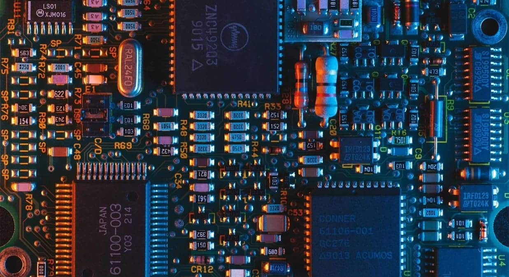
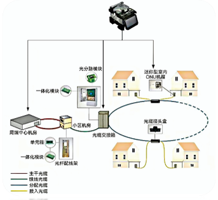
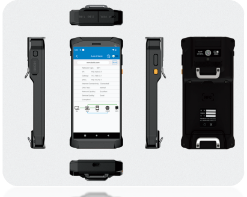
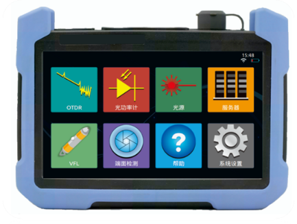

Совместимость по контактам с ведущими устройствами отрасли — прямая замена.

Название |
Тип |
Рабочая температура |
Размеры |
Ключевые параметры производительности |
|---|---|---|---|---|
DDR Termination Regulator |
DFN10 |
-55℃~125℃ |
3mm*3mm*0.75mm |
Power Supply Voltage VIN: 2.375V ~ 3.5V; |
4Gb DDR3 Memory |
FBGA96 |
-55℃~125℃ |
9mm*13mm*1.2mm |
Operating Voltage: 1.5V; |
8Gb DDR4 Dynamic Memory |
FBGA96 |
-55℃~125℃ |
7.5mm*13mm*1.2mm |
Operating Voltage VDD = VDDQ = 1.2V; |
Power Sequencing Controller |
SOT23-6 |
-55℃~125℃ |
2.92mm*2.8mm*1.15mm |
Operating Voltage: 2.7V ~ 5.5V; |
16-bit Bus Transceiver |
TSSOP48 |
-55℃~125℃ |
12.5mm*8.1mm*1.2mm |
Input Voltage VCCA / VCCB: 1.65V ~ 5.5V; |
Multi-Channel Clock Buffer |
QFN64 |
-55℃~125℃ |
8mm*8mm*0.75mm; |
Operating Voltage: 2.5V / 3.3V; |
Измерительные приборы для оптоволоконной связи.
Аппарат для сварки оптоволоконных кабелей |
Портативный интеллектуальный тестер для установки и обслуживания сетей 5G |
Оптический рефлектометр временной области |
Разработанный для обеспечения точности и надежности, аппарат для сварки оптоволоконных кабелей демонстрирует исключительную производительность в широком диапазоне применений.
Сварка и защита оптических волокон. Строительство кабельных линий. Техническое обслуживание и аварийный ремонт. Производство и тестирование компонентов. Исследования и образование. |
КПК построен на базе интеллектуального модуля 5G, обладающего возможностями «умного» терминала и интегрирующего в себя полный набор функций, включая:
Тестирование коммуникации. Измерение скорости. Тестирование беспроводных сетей. Захват коммуникационных пакетов. Тестирование оптической мощности. Красный источник света. Проверка ID card. Симуляция TV. |
Разработанный для точных измерений и надежной работы, рефлектометр OTDR используется для измерения ключевых параметров, таких как длина волокна, затухание и качество сращивания, в различных типах оптических волокон и кабелей.
Домашнее Оптоволокно Городские сети. Магистральные сети (Ур. 2). Инженерное строительство. Техническое обслуживание линий электропередачи и аварийный ремонт. НИОКР и производство. |
|---|---|---|
|
 |
 |
 |
Безопасное и надежное электропитание для высокотехнологичных медицинских систем по всему миру.
— заботясь о вашем здоровье.
Название |
Описание |
Фото |
|---|---|---|
|
Mobile Ultrasonic Power Supply. |
Уверенно управляйте своим мобильным ультразвуковым аппаратом. Разработан для сохранения чувствительности сенсорного экрана, устранения помех изображения и обеспечения безопасной и надежной работы. |
|
|
Mobile CT Power Supply. |
Предназначена для мобильного CT-сканирования и мобильного электропитания. Система включает в себя следующие характеристики: Конфигурация нагрузки: разделена на высоковольтную и низковольтную секции. Высоковольтная секция питает высоковольтный генератор; низковольтная секция питает двигатели постоянного тока. Режим зарядки: Однофазная зарядка. Аккумулятор: Литий-железо-фосфатный аккумулятор с высокой плотностью энергии и высокой скоростью разряда. (LiFePO₄). |
|
|
Medical Image System PDU. |
Предназначен для применения в медицинской визуализации, в том числе: CT, MR, DSA, DR, DXR, и системы ядерной медицины. Помимо всего прочего, этот PDU отличается надежной защитой выходного напряжения, обеспечивающей безопасную и стабильную подачу электроэнергии в критически важных медицинских учреждениях. |
|
|
Medical Portable Isolation Power Supply. |
Разработанная для медицинского оборудования, эта серия обеспечивает необходимую изоляцию от основного источника питания, эффективно ограничивая утечки тока гарантируя безопасность как пациентов, так и операторов. Компактные размеры делают ее идеальной для помещений с ограниченным пространством. |
|
|
Energy Storage Power Supply. |
Предназначен для обеспечения надежного электропитания ветеринарных клиник, мобильных полевых госпиталей и полевых медицинских пунктов. |
|
|
High Frequency PDU. |
Созданный на основе высокочастотного преобразователя переменного/постоянного тока и постоянного/постоянного тока, этот блок распределения питания обеспечивает исключительную производительность благодаря передовой технологии преобразования энергии. |
|
|
Others. |
Трансформатор с R-образным сердечником, трансформатор EI, тороидальный трансформатор, высокочастотный индуктор, датчик напряжения 500В переменного тока. |
Название |
Тип |
Рабочая температура |
Размеры |
Ключевые параметры производительности |
|---|---|---|---|---|
| DDR Termination Regulator | DFN10 | -55℃~125℃ | 3mm*3mm*0.75mm |
Power Supply Voltage VIN: 2.375V ~ 3.5V; Power Supply Voltage VLDOIN: 1.1V ~ 3.5V; Output Voltage: 0.6V / 0.675V / 0.75V / 0.9V / 1.25V |
| 4Gb DDR3 Memory | FBGA96 |
-55℃~125℃ -40℃~105℃ |
9mm*13mm*1.2mm |
Operating Voltage: 1.5V; Number of Banks: 8; 8n-Bit Prefetch Architecture; Data Rate: 1600Mbps |
| 8Gb DDR4 Dynamic Memory | FBGA96 | -55℃~125℃ | 7.5mm*13mm*1.2mm |
Operating Voltage VDD = VDDQ = 1.2V; Operating Voltage VPP = 2.5V; Data Rate: 3200Mbps |
| Power Sequencing Controller | SOT23-6 | -55℃~125℃ | 2.92mm*2.8mm*1.15mm |
Operating Voltage: 2.7V ~ 5.5V; Low Quiescent Current: 55μA (Typical); Power-On/Power-Off Sequencing Control; Single Enable Control Signal Input; Cascadable Output Support |
| 16-bit Bus Transceiver | TSSOP48 | -55℃~125℃ | 12.5mm*8.1mm*1.2mm |
Input Voltage VCCA / VCCB: 1.65V ~ 5.5V; Input Voltage VI: 0V ~ 5.5V; Output Voltage VO: 0V ~ VCCO; Ioff Feature Supports Partial Power-Down Mode |
| Multi-Channel Clock Buffer |
QFN64 QFN32 |
-55℃~125℃ |
8mm*8mm*0.75mm 5mm*5mm*0.75mm |
Operating Voltage: 2.5V / 3.3V; Operating Frequency: < 800MHz; Propagation Delay: < 3ns; 2 Inputs, 16/8 Outputs; Supports Common Input Signal Formats such as LVPECL, HCSL, LVDS, CML |